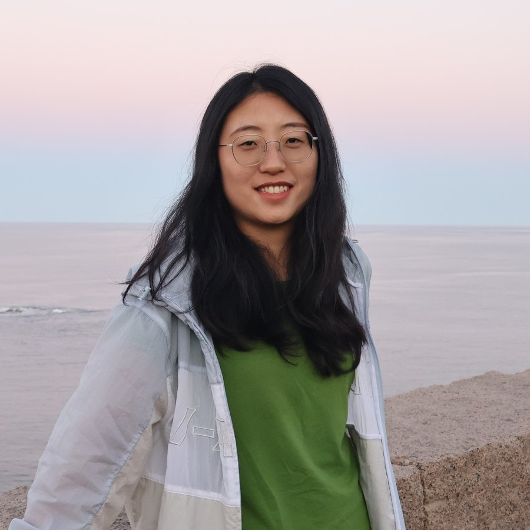

Our paper “A tail likelihood ratio method for large-scale causal mediation tests in epigenome-wide studies” has been accepted in the Journal of the American Statistical Association. 🎉
With R. Wang, Y. Lin and X. Lin · Software: TLR ↗
Postdoctoral Research Fellow in Biostatistics. I build methods that extract more reliable discovery from the data we already have — and prove they stay valid even when the AI-generative model is wrong, the populations are heterogeneous, or the formulation of the statistic is complex.
Currently, I'm on the job market. Please don't hesitate to contact me if you are interested in my research or would like to share any ideas 🥳!

I am a Postdoctoral Research Fellow in the Department of Biostatistics at the Harvard T.H. Chan School of Public Health, working with Professor Xihong Lin.
My work starts from one observation: Data is rich and diverse, yet each has its own problems. Every dataset contains more information than a standard or naive analysis extracts.
Some of it sits in missing measurements — the 90% of a biobank whose proteome was never assayed, though its genotypes and clinical records are complete. Some sits in heterogenous populations - the target population is too small, and the available source populations are too heterogeneous to combine. Some is discarded by the analysis itself, when half a million hypothesis tests are evaluated one at a time, and everything the ensemble knows is thrown away. And some information is ignored when participants are enrolled, by a design that leaves balance to chance.
I build methods that convert this potential information into scientific discovery. The difficulty is that each of these sources is untrustworthy in its own specific way — a generative model can be misspecified, another population can carry different biology, a composite null distribution is hard to characterize — which is why the interesting part of the problem is statistical rather than computational.
Before Harvard, I earned my Ph.D. in Statistics at Renmin University of China.
Biomedical research routinely discards four critical sources of information: unmeasured samples, excluded populations, the hidden structure of large-scale testing, and the study’s own design. My research builds methodological frameworks for each, united by a single guarantee: borrowing strength must never cost you the error rate.
When a study runs half a million tests, the ensemble of statistics is enormously informative about which hypotheses are true. I turn the multiplicity into the thing that makes the test nearly optimal.
M-DACT & Tail likelihood ratio test90% of a biobank has no proteomic assay but complete genotypes and records. Rather than substituting predictions for data, I model them jointly inside a mixed model — AI model misspecification costs power, never validity.
Syn-PALM & MultiSynSurrA minority cohort is underpowered while a cohort a hundred times larger sits beside it. Pooling naively is worse than not borrowing at all; I decompose the target null instead of assuming transportability away.
HEART-GWASBefore anyone is enrolled, the design fixes how much a study will ever reveal. Covariate-adaptive randomization and design strategies for networked experiments help to get better treatment assignment.
Adaptive randomization & Network interference“The auxiliary information is allowed to be arbitrarily wrong.”
This is the rule I hold myself to in my project. Validity — type I error, false discovery rate, unbiasedness for the target estimand — is established by derivation, never inherited from an assumption that the model, the borrowed population, or the imputation happens to be correct. Accuracy buys power, and nothing else. The result is a guarantee worth stating plainly: provably never worse than the classical analysis that throws the extra information away, and strictly better whenever that information is real.
Over the next five years I want to build a general theory, and a usable software stack, for turning imperfect auxiliary information into valid scientific discovery — together with adversarial benchmarks, because this literature still has no shared standard for demonstrating that a method fails safely.
Exposures and outcomes are measured on everyone, the proteome and epigenome in between on almost no one. Calibrated synthetic mediators, tested with a synthetic tail likelihood ratio test, so that pathway discovery is no longer capped by assay budgets.
A prediction model, another population, a historical control arm and an external registry are one formal object: decorrelate it from the target, decompose the null it can misrepresent, and decide how much to borrow decision-theoretically.
Single-cell, protein-language and clinical models are becoming black-box, silently updated measurement devices. Conformal layers, drift diagnostics and selective-inference corrections give an end-to-end reliability audit for AI-assisted discovery.
* corresponding author; † co-first authors (equal contribution).
Open-source R packages implementing my methods, and a data resource. Numbers refer to the publication list above.
Transfer learning with synthetic phenotype assisted linear mixed models for genetic discovery in under-represented populations.
Synthetic phenotype assisted linear mixed models for proteome-wide genetic discovery in incomplete biobank data.
Synthetic surrogate regression with several synthetic phenotypes kept as separate outcomes, for association studies of partially measured outcomes such as metabolites assayed in different sub-studies.
Heterogeneity-aware empowerment via adaptive robust transfer.
Tail likelihood ratio test for large-scale causal mediation under a composite null hypothesis.
Covariate-adjusted adaptive randomization via Mahalanobis distance, including multi-arm trials.
Genome-wide summary statistics for 2,916 plasma proteins in 402,086 UK Biobank participants.
Always in motion — on the water, on the court, on the snow. Away from the data, I'm happiest when my heart rate is up. I run marathons, play tennis, swim, and carve down ski slopes; I love the rhythm of rowing and the pull of a good race. And because the best moments are shared, I'm all in on team sports too — volleyball, dragon boat, and ultimate frisbee. Whatever the season, I'll keep moving.